Paru Banjara
I recently graduated from the Master of Science in Information program with a focus on Big Data Analytics at the University of Michigan. I completed my undergraduate degree in Information Science. In addition, I have a health-care background. I attended a nursing college in Nepal, where I had various opportunities to learn and practice health-care skills during my nursing training. Furthermore, I have a passion for exploring different hobbies, such as design, artwork, photography, and traveling.
Education
Master of Science in Information
University of Michigan - Ann Arbor
Graduated: Aug. 2026
Bachelor of Science in Information
University of Michigan - Ann Arbor
Graduated: May 2024
Data Science Experience
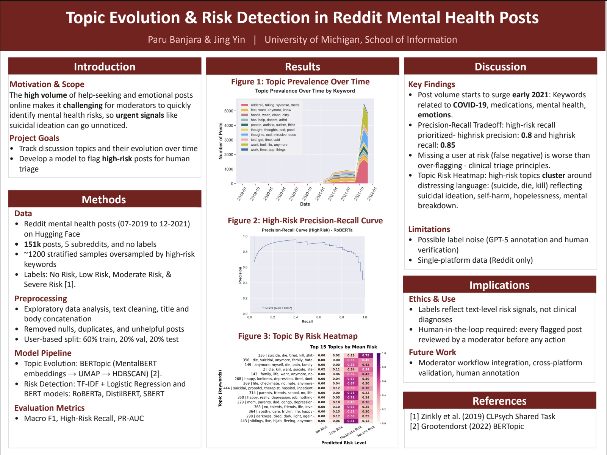
For the graduate capstone project, I collaborated with another student and built the risk-classification workflow and topic–risk integration components of an NLP decision-support pipeline for Reddit mental health posts. I used approximately 1,200 annotated posts out of a cleaned corpus of 87,733 posts to train and compare a TF-IDF and logistic-regression baseline with DistilBERT, SBERT, and RoBERTa for four-level risk classification and binary high-risk triage. On the held-out test set, RoBERTa offered the best balance among the models evaluated, achieving 0.846 high-risk recall, 0.800 precision, and 0.867 PR-AUC. I then combined its predictions with my teammate's BERTopic results for 34,146 posts to visualize how discussion themes relate to predicted risk levels using a heatmap. The analysis highlighted elevated risk in topics containing explicit self-harm language and showed how the pipeline could help moderators focus their review. Throughout the project, we treated model outputs as triage signals requiring human judgment and documented limitations in label quality, generalizability, bias, and privacy. Please view the poster and find the GitHub repository that contains the code.
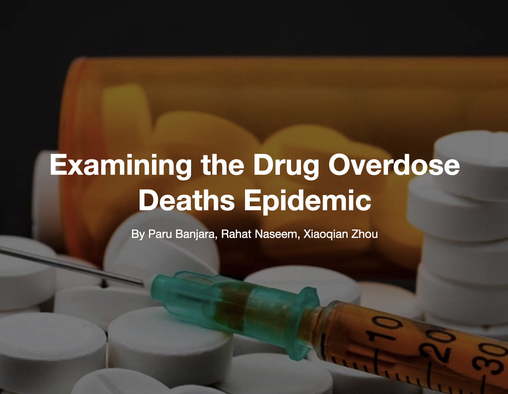
This is a data visualization project for an Information Visualization (SI 649) course. I worked with two other team members and generated interactive visualizations using Altair. I created two visualizations. The first one (Fig. 3) compared the drug overdose death rates and unemployment rates across states in the United States. The second visualization (Fig. 4) compared the drug overdose death rates along with unemployment and poverty rates per state.
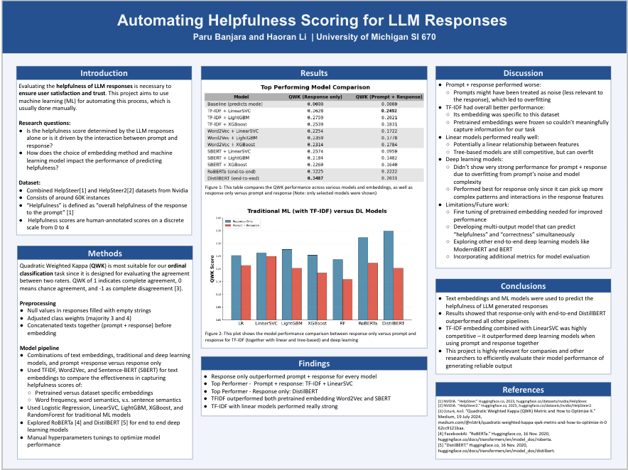
This is an Applied Machine Learning course project. I collaborated with another student and trained models using various machine learning and deep learning techniques. This project was inspired by the idea of assigning helpfulness scores to the responses produced by LLMs. Initially, each response was manually assigned a helpfulness score from 0 to 4 (least helpful to most helpful). However, this project was focused on automating that process by using trained models to predict the helpfulness scores. Find the poster for the project.
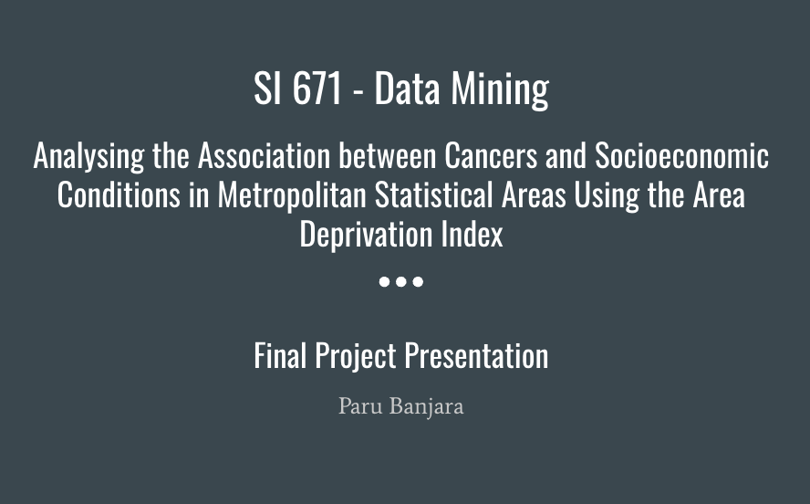
This is a project for a Data Mining course. The objective of this project was to understand the relationship between various types of cancer and Area Deprivation Index (ADI) in Metropolitan Statistical Areas (MSA). I used multiple datasets - a cancer dataset, an ADI dataset, and two geospatial datasets to perform analyses and analyze the relationships between cancer types and ADI in MSA. The preprocessing involved data cleaning in order to remove the non-relevant information, change data types, and drop NaN values. Then, I performed geospatial joins in order to join the cancer and ADI datasets on census block groups. The methods I used include dimensionality reduction using Principal Component Analysis (PCA), correlation analysis, cluster analysis using KMeans clustering, and topic modeling using Singular Value Decomposition (SVD). Lastly, I created a presentation for the project.
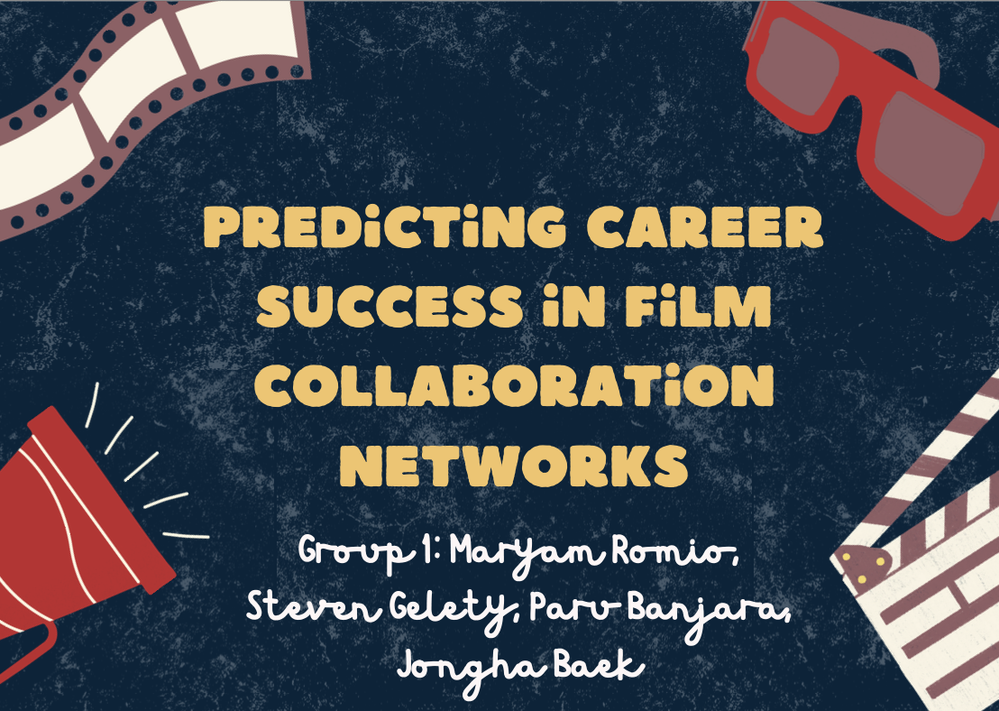
This is a final course project for a Networks course. I collaborated with three other students to investigate how actor and crew success in the film industry is determined based on their collaboration patterns within the industry. This project utilized the TMDB 5000 Movie Dataset from Kaggle that allowed the team to incorporate rich information on cast, crew, genres, revenues, and budgets. The methods used were Graph Convolutional Networks (GCNs), Community Detection, and Centrality Measures (such as eigenvector centrality and degree centrality). The final presentation incorporates research questions, motivation, methods, and results.
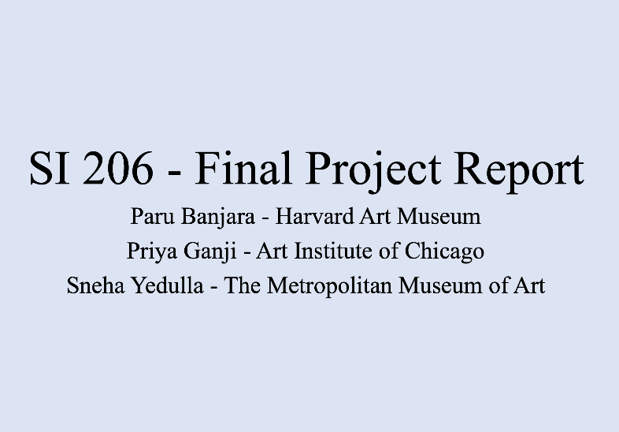
This project is for the Object-Oriented Programming course (SI 206). A team of three students worked on museum data. Each person worked with a separate museum Application Programming Interface (API). I worked with the Harvard Art Museum API and extracted data related to artists and their artworks. The goal of the project was to compare the data for each museum to identify the average duration to complete the artworks. This project involved making API calls to museum APIs to retrieve information, cleaning the data, creating a database and its tables, storing data into database tables, and creating visualizations. The code has been stored in a GitHub repository.
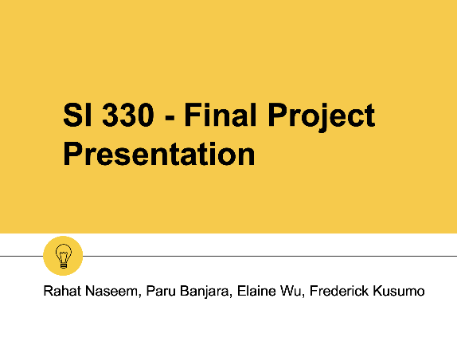
This project is for a data manipulation course. I worked with real-world datasets from Southeast Michigan with a team of four. This project was an opportunity to utilize the data manipulation skills obtained throughout the semester. I answered four different questions that involved identifying fire incident types and the average time needed to resolve a fire incident after it was reported, time series analysis of Ford stock prices, sentiment analysis on the association between the 911 call description and the type of crime, and finally, analyzing bird migration frequency patterns based on mean temperature. Please find the project presentation.
Web Development Experience
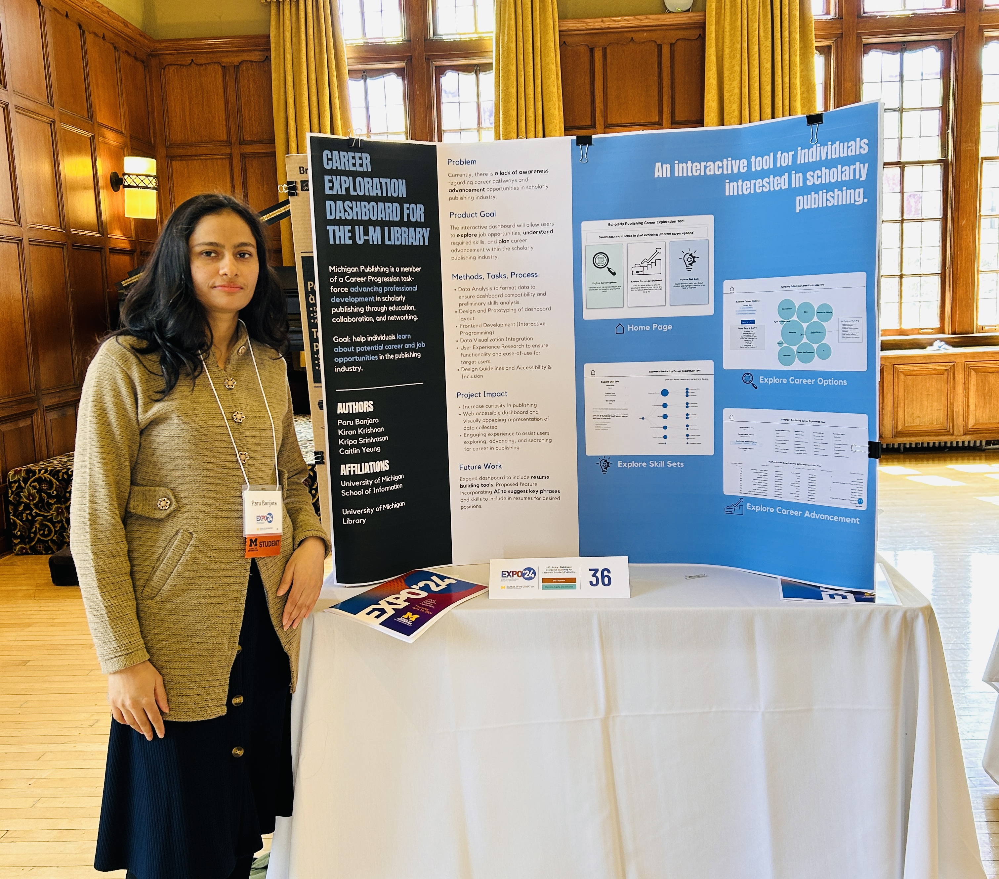
This is an image of myself during a poster presentation event (Exposition 2024) at the University of Michigan, Ann Arbor hosted by the School of Information (UMSI). The project involved building a multi-page career exploration tool for individuals interested in exploring career opportunities in Scholarly Publishing. The interactive dashboard incorporated three different personas and a home page. I led the project by guiding other team members from developing mock-up sketches of the personas and turning them into prototypes to developing a proof-of-concept interactive dashboard. Please find the project presentation, a poster, and a published paper with mentions of contributors of the interactive dashboard.
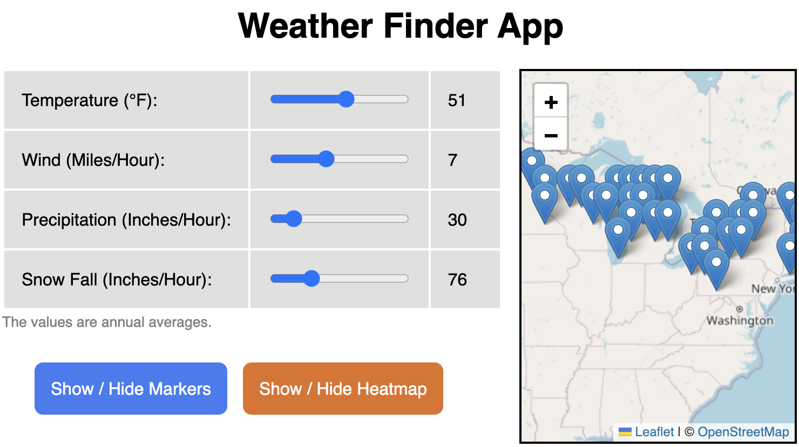
I developed a basic weather finder app for a web development course called Building Interactive Applications (SI 379). I used a weather dataset provided by the National Centers for Environmental Information. First, I performed data cleaning and transformed the data into JSON format so that I could use it for the app. I used the Leaflet JavaScript library to integrate a map into the project. The app utilizes heatmap and marker components to present the annual averages for temperature, wind, precipitation and snowfall for various places in the U.S. Although the design was primarily focused on functionality (JavaScript), presentation and accessibility could be incorporated to improve users' experiences.
Research Experience
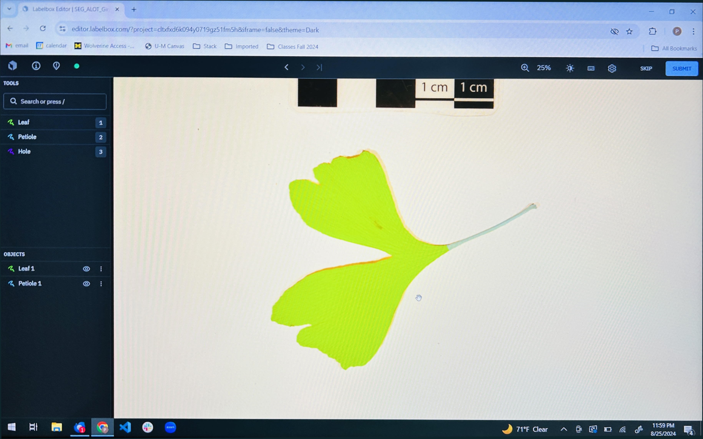
I worked as a research assistant and assisted with labeling thousands of plant images using software called Labelbox for training machine learning models. I used bounding box and segmentation methods to annotate and produce high quality images. Besides annotating images, I gained skills in effective communication and research from this experience.
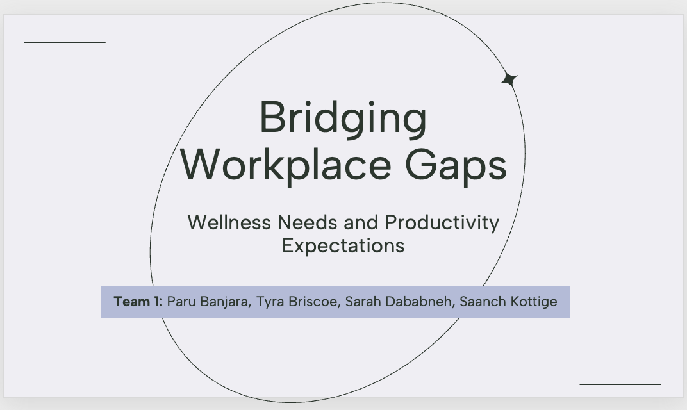
I worked with a team of four on a client project. The theme of this project was the future of work. The project involved research writing, conducting interviews, and thematic analysis where we collected data and performed qualitative coding and then identified themes using a Lucidspark board. At the end of the project, we prepared a report of our research findings and delivered it to the client.
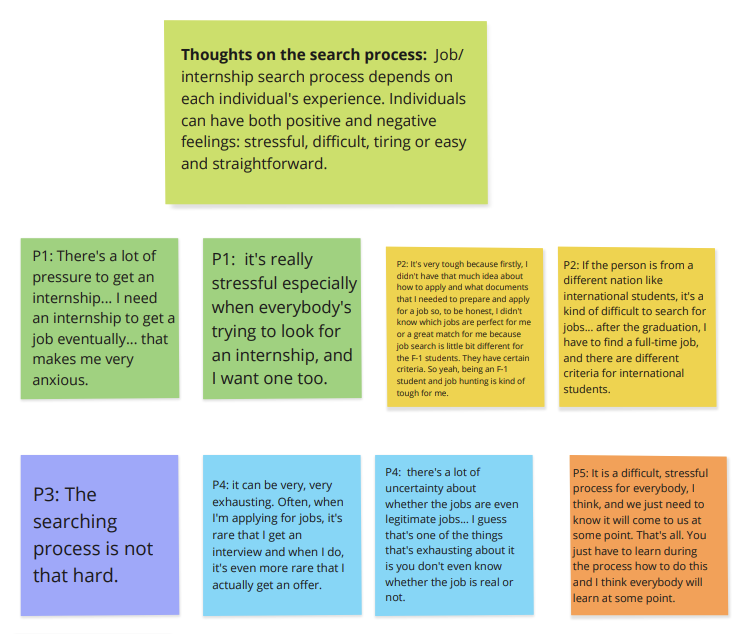
I worked on a research project for a course called Needs Assessment and Usability Evaluation (SI 422). This course is part of the undergraduate User Experience (UX) Design track. My major was in Information Analysis, but I took this course due to my curiosity in UX. The project was focused on product research by understanding the users' needs while utilizing a job search platform. This course helped me gain highly valuable skills in research and user studies. I conducted several interviews for data collection. Then, I performed qualitative coding and thematic analysis in order to understand the needs of the users and evaluate the usability of various job search websites.
Nursing Experience
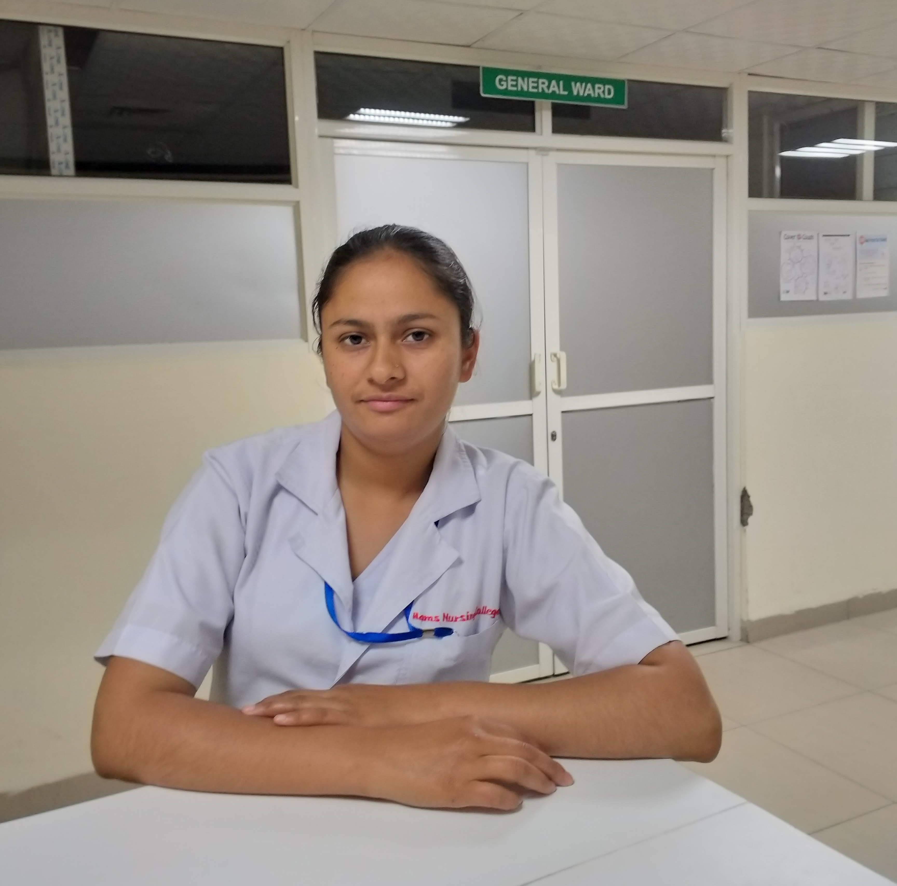
Before starting my career in data science, I attended a nursing school in Nepal. I worked at different hospitals for approximately two years as a student nurse. I have worked directly with patients, clients, community members, and health care teams. I also took a leadership position at a hospital as part of my education where my responsibilities included supervising the work of junior students and auxiliary staff, assigning daily work to the staff and students, maintaining good interpersonal relationships, co-operating and co-ordinating with different categories of health care staff and departments, performing a case study of a critical patient and presenting the case, attending doctors’ rounds, maintaining knowledge of the conditions of all the patients in my assigned department, checking all the necessary medical supplies, and restocking them, identifying administrative problems and finding solutions. I also participated in a health education program in order to make the community members more aware of the importance of eating healthy food and the management of diarrhea. This picture was taken at a hospital while I was working a night shift in the general ward.
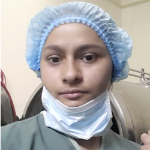
While working as a student nurse, I also gained soft skills, such as working in a team, building interpersonal relationships with people from different domains and backgrounds, working in stressful situations and acting accordingly, and providing counseling and health guidance to patients and clients. This is a picture of myself working at a Central Sterile Services Department (CSSD). The sterilization equipment can be seen behind me.
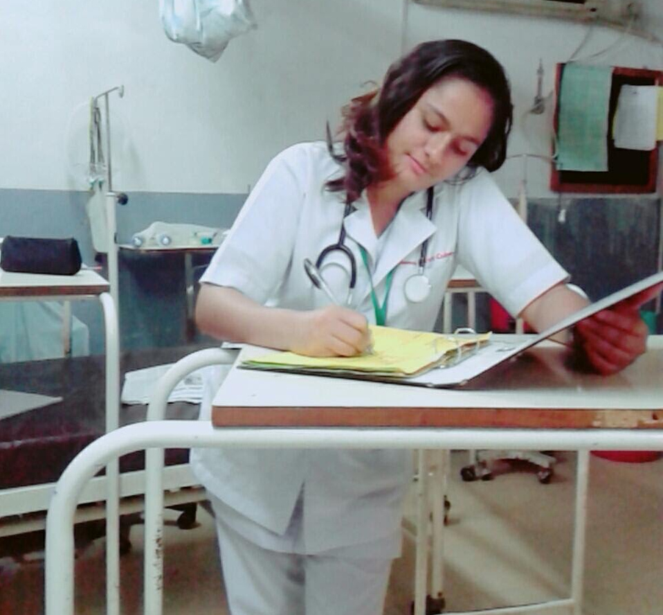
I have worked with patients in the most critical situations, such as patients with burns, vertebral fractures, post-operative needs, and labor and delivery needs. This image showcases me working at an Intensive Care Unit (ICU) and documenting patient information, such as vital signs, food and intravenous fluid intake, medications, and other details into the patient file.
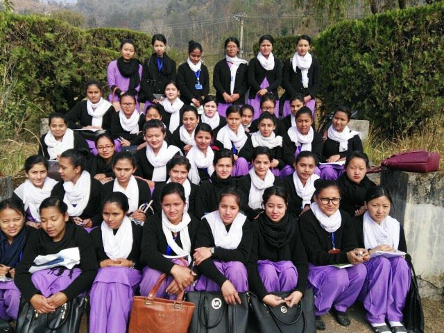
This is a group image of my nursing cohort. I am sitting all the way to the left (second row from back). This image was taken while we were visiting a Cerebral Palsy Center in Nepal, where we got to learn about children with Cerebral Palsy. There, I had the chance to hear about their daily struggles, progress, and intellectual abilities from their caretakers.
Certificates
ChatGPT Advanced Data Analysis
Vanderbilt University
Issued July 2025
View Certificate
AI powered creativity
AI Workflows
ChatGPT
Data Analysis
Data Processing
Data Transformation
Document Management
File I/O
Generative AI
Prompt Engineering
Prompt Patterns
Responsible AI
Prompt Engineering for ChatGPT
Vanderbilt University
Issued June 2025
View Certificate
AI literacy
AI powered creativity
Artificial Intelligence
ChatGPT
Generative AI Agents
Large Language Modeling
LLM Application
Prompt Engineering
Prompt Patterns
Using Python to Access Web Data
University of Michigan
Issued August 2023
View Certificate
Data Processing
HTML
JSON
Network Protocols
Python Programming
Restful API
Web Scraping
XML
Data Collection and Processing with Python
University of Michigan
Issued August 2022
View Certificate
Data Collection
Data Import/Export
Data Manipulation
Data Processing
Data Structures
Data Transformation
Data Wrangling
File I/O
JSON
Python Programming
Restful API
Introduction to Data Science in Python
University of Michigan
Issued August 2023
View Certificate
Data Analysis
Data Cleansing
Data-Driven Decision-Making
Data Import/Export
Data Preprocessing
Data Processing
Data Transformation
Data Wrangling
NumPy
Python Programming
Statistical Analysis
Statistical Methods
Here you can find pictures of my hobbies, interests, and previous coursework: Photography & Traveling and Arts & Design